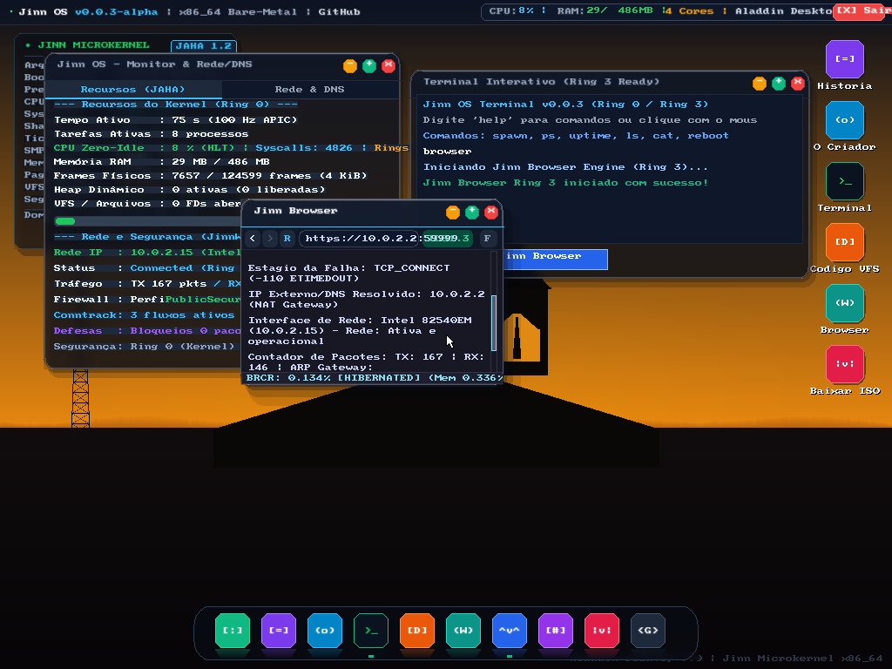
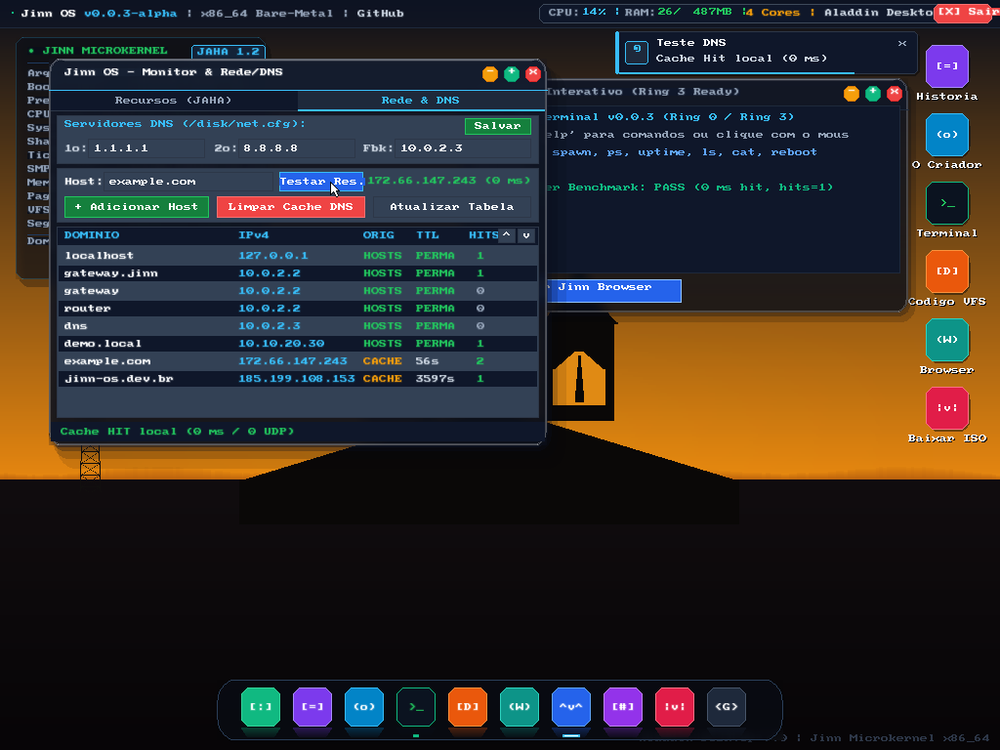

Network Failure Observability in Jinn OS: Diagnóstico Estruturado na Fronteira Kernel–User Space
Parte 4 da série Jinn Browser — Internet Connectivity, TLS and Network Observability. A maioria dos projetos experimentais de sistema operacional exibe apenas mensagens genéricas quando uma conexão falha. No Jinn OS, não reinventamos a ideia clássica de telemetria de rede (presente via netlink/ss/eBPF em sistemas consolidados), mas projetamos e integramos um canal determinístico sob demanda cruzando a fronteira Ring 3 → Syscalls → Ring 0 para que a aplicação saiba exatamente onde e por que a pilha de rede parou.
1. O Problema Levantado & Arquitetura da Fronteira Kernel–User Space
Em capturas iniciais do Jinn Browser, erros de rede imprimiam apenas rótulos estáticos com valores vazios (Estagio da Falha:, IP Gateway/DNS Consultado: sem dados). Quando um processo em Ring 3 precisa diagnosticar falhas em sistemas isolados, erros opacos como -110 escondem se o problema ocorreu no DNS, ARP do gateway, 3-way handshake TCP, entropia ou handshake/AEAD TLS 1.3.
- Estado local em Ring 3 (
apps/ola-mundo/src/main.rs#L1848-L1876):FetchDiagInfograva apenas quando ocorre requisição/erro:host,resolved_ip,has_resolved_ip,is_https,port,dns_code,connect_codeehttp_status, mapeando estágios nominais (TCP_CONNECT (-110 ETIMEDOUT),TLS_HANDSHAKE (RFC 8446),TLS_DECRYPT (AEAD),RECV (-11 ETIMEDOUT),TLS_ENTROPY (Sys69),HTTP_REDIRECT). - Telemetria viva do Kernel (Syscall
88e Syscall97): somente no momento da falha, o navegador consultasys_get_system_stats(SystemStatsUseremsrc/syscall.rs#L3303-L3373:net_adapter,net_ip,net_state_desc,net_tx_packets,net_rx_packets) esys_net_hot_route_list(src/syscall.rs#L3215-L3233) para recuperar o próximo salto enext_hop_macjá resolvidos naHotRouteTable.
2. Melhorias Implementadas & Custo Zero-Idle
Por consultar o estado do kernel exclusivamente no caminho de exceção (lazy-on-error) e via leitura direta da janela de estado gráfico no Aladdin Desktop, a arquitetura preserva a política Zero-Idle Resource Consumption: nos testes E2E em QEMU pós-build (test_hot_routes_e2e.py), os núcleos AP (cpu1..cpu3) permaneceram com d_task=0 e idle=100.00% durante a janela ociosa de 4 segundos, enquanto a mesma infraestrutura de syscalls alimenta em tempo real as abas DNS Local e Rotas Quentes no Aladdin Desktop.
3. Evidências Visuais Reais (Ring 3 Browser + Aladdin Monitor)

TCP_CONNECT (-110 ETIMEDOUT), IP 10.0.2.2, interface Intel 82540EM (10.0.2.15) e contadores TX: 167 | RX: 146.

TLS1.3 ao exibir falha em https://10.0.2.2:59999.

52:55:0a:00:02:02), hits e RTT médio vindos da Syscall 97.

HOSTS / CACHE), TTL e acertos via Syscalls 93/96 sem tráfego UDP extra no cache hit.
4. Aplicabilidade: Indústria, Uso Doméstico e Servidores
Usos Industriais, Automação & Sistemas Embarcados
Em equipamentos sem console SSH contínuo, o operador visualiza imediatamente se uma falha de envio vem de cabo desconectado (net_state_desc), ARP pendente, timeout DNS ou handshake TLS rejeitado — reduzindo tempo de triagem em campo sem agentes pesados de telemetria.
Usos Domésticos & Suporte Técnico
Substitui erros crípticos de soquete por causa raiz legível (estágio de DNS vs TCP vs TLS), permitindo ao usuário ou suporte saber se o roteador respondeu ao ARP ou se houve falha externa na porta 443.
Usos em Servidores, Edge & Monitoramento
Fornece inspeção rápida na fronteira microkernel–usuário sobre tabelas quentes L2/L3 (HotRouteTable) e contadores NIC (TX/RX) sob demanda via syscall, evitando daemons em background que consomem ciclos em servidores ociosos.
5. Limitações Conhecidas, Custos & Privacidade
Três pontos permanecem abertos nesta arquitetura para próximas iterações: (1) o custo isolado em ciclos/nanossegundos da dupla chamada Syscall 88 + Syscall 97 sob carga não foi medido em microbenchmark dedicado; (2) FetchDiagInfo ainda não inclui campos dedicados para fallback_occurred nem código de erro detalhado X.509/PKI; e (3) a exibição de IPs locais, gateway e MAC exige política de sanitização antes de exportar capturas de erro para suporte externo.
Jinn Engineering Observatory • Semântica & Colaboração Aberta
Domínios Técnicos & Ecossistemas Relacionados
Badges clicáveis indexados por bancada, domínio de engenharia e organizações/padrões do Radar Expandido (Nível B contextual, sem endosso implícito):
Aplicabilidade: Indústria, Uso Doméstico e Servidores
Terminais críticos, PLCs e gateways auditáveis com isolamento Ring 3, W^X em PML4 e integridade offline SHA-256 (.jpkg).
Navegação isolada, recuperação automática de sistema de arquivos FAT32/Ext2 e operação sem telemetria oculta.
Contenção de falhas de drivers em espaço de usuário, fronteira zero-trust de syscalls e redução de cadeia de suprimentos (0 crates.io no kernel).
Chamada Aberta para Pilotos (Indústria Local, Universidades & Setor Público Ético)
Convidamos integradores de automação industrial, laboratórios universitários de arquitetura/SO e instituições públicas eticamente responsáveis a reproduzirem estes experimentos em silício real (fechando lacunas emulador vs. hardware da Tabela B) ou propor estudos-piloto com Jinn OS, Aladdin e JHCS.
![[Valid RSS]](/valid-rss-rogers.png "Validate my RSS feed")